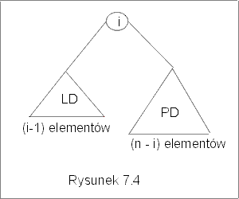

| « poprzedni punkt | nastêpny punkt » |
Najczê¶ciej wykonywan± operacj± na zbiorach jest wyszukiwanie. Je¿eli skoñczony zbiór jest reprezentowany przez drzewo binarnych poszukiwañ, to wyszukiwanie ustalonego elementu jest bardzo proste. Operacj±, o której bêdzie mowa w tym punkcie, jest dwuargumentowa operacja memeber, member: Et ´ BST ® B0. Dla danej etykiety e oraz danego drzewa binarnych poszukiwañ D, jej zadaniem jest odpowied¼ na pytanie, czy element e jest, czy nie jest etykiet± drzewa D,
member(e,D) = true wttw e jest etykiet± pewnego wierzcho³ka w drzewie D.
Warunek opisany powy¿ej jest oczywi¶cie warunkiem koñcowym specyfikacji poszukiwanego algorytmu. Warunek pocz±tkowy jest bardziej skomplikowany: zak³adamy, ¿e D jest drzewem binarnym, a ponadto spe³niony jest warunek :
(" vÎ D)(("x) (x Î LD(v) ® et(x) < et(v)) Ù ("x) (x Î PD(v) ® et(v) < et(x))).
Metoda
Zaczynaj±c od korzenia drzewa D, porównujemy etykietê odwiedzanego wierzcho³ka z e. Je¶li nie jest to e, to w dalszym ci±gu szukaæ bêdziemy w lewym poddrzewie, o ile e < et(v). Je¶li et(v) < e, to poszukiwania bêd± kontynuowane w prawym poddrzewie wierzcho³ka v. Operacja zwraca warto¶æ false, gdy e nie jest etykiet± ¿adnego wierzcho³ka drzewa D.
Algorytm
W opisanym poni¿ej algorytmie, zak³adamy, ¿e root jest korzeniem drzewa binarnych poszukiwañ D i obiektem typu node (por. wyk³ad VI p.4).
| boolean member(e : Et, root : node) { | |||
| result := false; v := root; | |||
| while (v ¹ null and not result) do | // dopóki v jest wierzcho³kiem drzewa | ||
| if (v.val = e) then | // je¶li e jest etykiet± v to wychodzimy z pêtli | ||
| result := true | |||
| else | // je¶li e nie jest etykiet± wierzcho³ka v | ||
| if (v.val < e) then | |
||
| v := v.right | // bêdziemy poszukiwaæ e w prawym poddrzewie | ||
| else | |
||
| v := v. left | // bêdziemy poszukiwaæ e w lewym poddrzewie | ||
| fi | |
||
| fi; | |
||
| od; | |
||
| return result | |
||
| } | |
|
|
Przyk³ad 3.1
Rozwa¿my drzewo BST przedstawione na rysunku 7.3(a). Je¶li
zastosujemy algorytm member w celu zbadania, czy 3 jest etykiet± tego
drzewa, to wykonany nastêpuj±ce kroki: porównamy najpierw etykietê
korzenia z 3. Poniewa¿ 3<5, zatem zgodnie z zasad± etykietowania
drzew BST, etykieta 3 o ile znajduje siê w tym drzewie, musi siê
znajdowaæ w lewym poddrzewie. Teraz porównujemy 3 z 2. Poniewa¿ 3 jest
wiêksze od 2, to w nastêpnym kroku przejdziemy do prawego nastêpnika i
porównamy 4 z 3. Poniewa¿ 3 jest mniejsze od 4, wiêc gdyby etykieta 3
znajdowa³a siê w tym drzewie, musia³aby byæ w lewym poddrzewie
wierzcho³ka z etykiet± 4. Wierzcho³ek ten jest jednak li¶ciem, zatem 3
nie jest etykiet± ¿adnego wierzcho³ka w tym drzewie.
Zastosujmy teraz ten sam algorytm do znalezienia etykiety 6. Zostan±
wykonane nastêpuj±ce porównania : 5=6, 5<6, 8=6, 8<6, 7=6,7<6,
6=6. Poniewa¿ 5 nie jest równe 6 oraz 5 jest mniejsze od 6, zatem
pójdziemy w prawo. Poniewa¿ 8 nie jest równe 6 i 8 nie jest
mniejsze od 6 pójdziemy pójdziemy w lewo itd. Tym razem wynikiem bêdzie
true, gdy¿ 6 jest etykiet± wierzcho³ka w rozwa¿anym drzewie. J
Poprawno¶æ algorytmu
Chcemy udowodniæ, ¿e algorytm zawsze zatrzymuje siê i warto¶ci± zmiennej result jest true tylko wtedy, gdy w drzewie D, którego korzeniem jest root, zosta³ znaleziony wierzcho³ek v taki, ¿e et(v) = e. Pierwsza czê¶æ jest do¶æ prosta. Niech h bêdzie wysoko¶ci± drzewa D. W ka¿dym przebiegu pêtli, o ile nie znajdziemy elementu e, przechodzimy do badania wierzcho³ka z nastêpnego poziomu drzewa. Poniewa¿ z za³o¿enia w drzewie nie ma cyklu, oraz w ka¿dej iteracji pêtli odleg³o¶æ od korzenia (mierzona d³ugo¶ci± ¶cie¿ki) jest wiêksza ni¿ w iteracji poprzedniej, to po co najwy¿ej h+1 krokach dojdziemy do wierzcho³ka v, który jest li¶ciem i algorytm zakoñczy wykonywanie pêtli. Oczywi¶cie, je¶li znale¼li¶my wierzcho³ek, taki ¿e et(v) = e, to warto¶æ zmiennej result zostanie ustalona na true i algorytm te¿ zakoñczy obliczenie.
Pozostaje uzasadniæ, ¿e wynik jest ustalony poprawnie. Zauwa¿my najpierw, ¿e wynikiem jest false, je¶li drzewo jest puste. Niech V bêdzie zbiorem wszystkich wierzcho³ków drzewa D i Dv niech oznacza poddrzewo drzewa D, którego korzeniem jest wierzcho³ek v oraz Dv' niech bêdzie zbiorem wierzcho³ków drzewa D nie nale¿±cych do poddrzewa Dv. Za³ó¿my, ¿e przy kolejnym wej¶ciu do pêtli "while" spe³niony jest warunek (*). Warunek ten stwierdza, ¿e albo zmienna result ma warto¶æ true i istnieje wierzcho³ek z etykiet± e, albo result nadal ma warto¶æ false i ¿aden z wierzcho³ków, które nie s± w poddrzewie Dv, nie ma etykiety e:
(*) ( result= true Ù ($wÎV) et(w) = e) Ú (result = false Ù ("wÎDv') et(w)¹ e),
Skoro powtarzamy wykonanie pêtli, zatem warunek pêtli (v
¹ null and not
result) jest spe³niony przez aktualne warto¶ci zmiennych. Oznacza to
wobec (*), ¿e prawdziwa jest druga czê¶æ warunku (*). Zaj¶æ mog±
teraz trzy przypadki.
(1) Albo v.val = e, a wtedy spe³niona bêdzie pierwsza czê¶æ
alternatywy (*).
(2) Albo v.val ¹ e i
v.val < e, a wtedy, na mocy definicji drzewa binarnych
poszukiwañ, etykieta e mo¿e siê znajdowaæ jedynie w prawym
poddrzewie wierzcho³ka v. Po wykonaniu instrukcji v := v.right,
spe³niony jest warunek (result = false
Ù ("wÎDv') et(w)¹ e).
(3) Albo v.val ¹ e
i e < v.val, wtedy nadal result = false i poza wierzcho³kami
lewego poddrzewa wierzcho³ka v na pewno nie ma etykiety e, czyli po
wykonaniu instrukcji v :=v.left spe³niony jest znów warunek
(result = false
Ù ("wÎDv')
et(w)¹ e).
Wynika st±d , ¿e po wykonaniu instrukcji warunkowej nadal jest spe³niona formu³a (*).
Udowodnili¶my wiêc, ¿e (*) jest niezmiennikiem pêtli w algorytmie member. Przed rozpoczêciem pêtli warunek (*) jest trywialnie spe³niony przez pocz±tkowe warto¶ci zmiennych, zatem po wykonaniu instrukcji "while" te¿ jest prawdziwy. Wyj¶cie z pêtli mo¿e nast±piæ tylko, gdy result =true, lub gdy v=null, wiêc
albo (result = true Ù ($wÎV) et(w) = e) albo ( v = null Ù result = false Ù ("wÎDv') et(w)¹ e) .
Zauwa¿my, ¿e Dv jest zbiorem pustym, gdy v= null. W konsekwencji Dv' = V\Dv = V. Czyli prawdziwe jest zdanie
( result= true Ù ($wÎV) et(w) = e) Ú (result = false Ù ("wÎV) et(w) ¹ e),
które jest równowa¿ne formule (result= true wttw ($wÎV) et(w) = e).J
Lemat 3.1 Algorytm member zastosowany do dowolnego drzewa binarnych poszukiwañ D oraz etykiety e, zwraca warto¶æ true wtedy i tylko wtedy, gdy istnieje wierzcho³ek w drzewie D, którego etykiet± jest e.
Koszt algorytmu
Przyjmijmy, ¿e operacj± dominuj±c± w tym algorytmie jest porównywanie etykiet, a rozmiarem danych niech bêdzie liczba wierzcho³ków drzewa. Jest do¶æ oczywiste, ¿e w najgorszym przypadku, np. gdy wierzcho³ki drzewa tworz± jedna tylko ¶cie¿kê, liczba wykonanych porównañ mo¿e byæ równa liczbie wierzcho³ków, czyli W(n) = O(n).
Zastanowimy siê teraz nad kosztem algorytmu w przypadku ¶rednim. Niech n bêdzie liczb± wierzcho³ków drzewa i niech etykietami wierzcho³ków bêd± liczby naturalne od 1 do n (mo¿na te¿ przyj±æ, ¿e liczby s± jedynie numerami etykiet po ich posortowaniu w porz±dku niemalej±cym). Przyjmijmy ponadto, ¿e prawdopodobieñstwo tego, ¿e korzeniem drzewa jest liczba i, jest takie samo dla wszystkich mo¿liwych warto¶ci i. Wynika st±d, ¿e ¶rednia liczba porównañ A(n) wykonanych dla znalezienia etykiety e wynosi
A(n) = Si=1,..n (1/n)´ ai,
gdzie ai jest ¶redni± liczb± porównañ dla znalezienia e w drzewie, którego etykiet± korzenia jest i.
Zauwa¿my, ¿e w lewym poddrzewie drzewa, którego korzeniem jest i znajduje siê tylko (i-1) wierzcho³ków (bo wszystkie etykiety w lewym poddrzewie maj± byæ mniejsze od i), a w prawym poddrzewie drzewa znajduje siê dok³adnie (n-i) wierzcho³ków (por. rysunek 7.4). Wynika st±d, ¿e prawdopodobieñstwo tego, ¿e szukana etykieta e znajduje siê w lewym poddrzewie wynosi (i-1)/n, a prawdopodobieñstwo tego, ¿e szukana etykieta e znajduje siê w prawym poddrzewie wynosi (n-i)/n. ¦rednia liczba porównañ dla znalezienia etykiety e w drzewie, którego etykiet± korzenia jest i wynosi wiêc:
(A(i-1)+1)´(i-1)/n + 1´(1/n) + (A(n-i) +1)´(n-i)/n.
Po podstawieniu, mamy
A(0) = 0 oraz A(n) = Si=1,..n(1/n) + Si=1,..,n-1(1/n2)´ 2iA(i) = 1 + (1/n2)Si=1,..,n-1 i´ A(i).
Rozwi±zaniem tego równania rekurencyjnego jest funkcja A(n)= c´lg n, gdzie c jest pewn± sta³±. Ostatecznie, ¶rednia liczba porównañ wykonanych przez algorytm member wynosi O(lg n).
Z powy¿szych rozwa¿añ wynika te¿, ¿e ¶redni± wysoko¶æ drzewa BST o n wierzcho³kach mo¿na oszacowaæ przez O(lg n). W konsekwencji ¶rednia liczba operacji wykonywanych przez algorytmy minBST i maxBST wynosi równie¿ O(lg n).
Pytanie 5: Zbadaj, czy jest mo¿liwe, aby w trakcie
poszukiwania etykiety 23 za pomoc± algorytmu member, w pewnym drzewie
binarnych poszukiwañ, napotkano wymienione poni¿ej etykiety?
(a) 50, 28, 14, 20, 23
(b) 15, 50, 45, 20, 18, 23
| « poprzedni punkt | nastêpny punkt » |